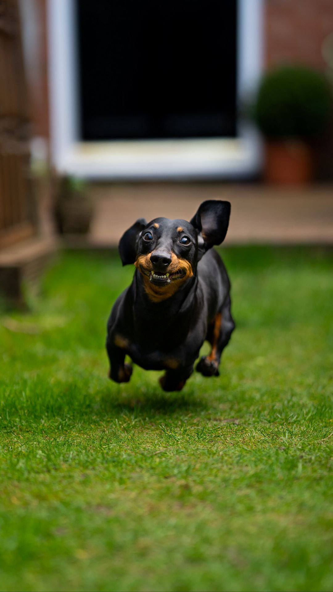

Генератор кличек для таксёныша
Нажмите "Сгенерировать"
Как выбрать щенка
Если вы решили завести таксу, то приступать к выбору щенка нужно еще до его появления на свет.
Прежде всего, стоит определиться, рабочую или декоративную собаку вы хотите иметь. От этого зависит, куда вам следует отправиться – на выставку или в поле, чтобы оценить качества родителей вашего будущего любимца.
Полезно будет также навести справки и о заводчике, особенно если вы покупаете малыша не в питомнике, а у частного лица.

При самостоятельном выборе обратите внимание на следующие моменты:
- У щенка не должно быть прибылых пальцев – их удаляют в первые дни жизни малыша.
- Хвост маленькой таксы на ощупь ровный и достаточно подвижный без малейших признаков любого вида деформации.
- У четырехнедельного щенка уже можно оценить правильность прикуса.
- Наличие пупочной или паховой грыжи нетрудно определить визуально.
- Присмотритесь, как двигается щенок. Опора при ходьбе должна быть на подушечки лап. Любые отклонения в походке, вялые задние ноги, переваливающийся зад могут являться признаками серьезных проблем с опорно-двигательным аппаратом.